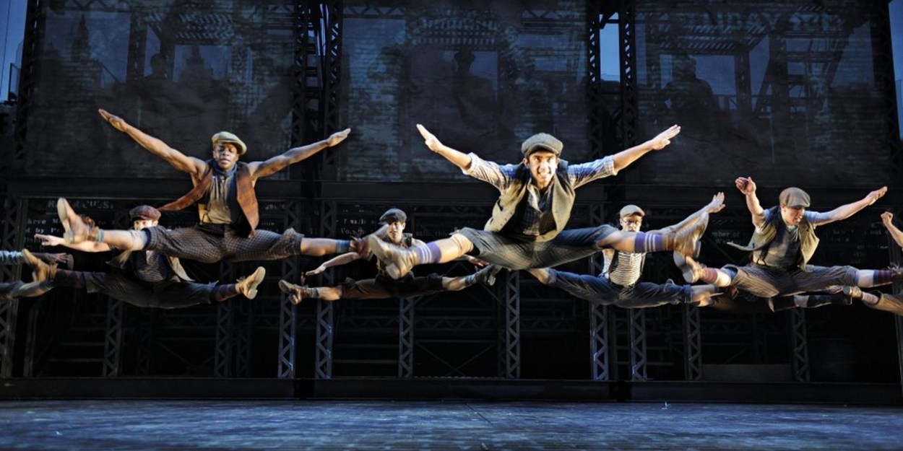

The Magic of Musicals
Emotional Expression
Musicals have the unique ability to convey deep emotions through song and dance, allowing for a more powerful and engaging storytelling experience. The combination of music and lyrics often amplifies the emotional impact, making scenes more memorable and affecting.
Creative Storytelling
The integration of music, dialogue, and dance in musicals offers a versatile platform for storytelling. This creative blend allows for imaginative and innovative ways to present stories, making them more dynamic and captivating.
- Unique storytelling methods like flashbacks or dream sequences
- Used in "The Phantom of the Opera."
- Incorporation of various music styles and dance forms
- Evident in "Hamilton" which blends hip-hop, R&B, and tradtitional show tunes.
- Use of lyrics and choreography to convey deeper meanings
- "The Lion King" where the circle of life is beatifully depicted.
Memorable Music
The songs in musicals often become iconic and are remembered long after the performance. These catchy tunes can evoke specific emotions and memories, creating a lasting connection with the audience.
- Wicked
- "Defying Gravity"
- "Popular"
- "Seasons of Love" from Rent
- "Dancing Queen" from Mamma Mia
- "One Day More" from Les Miserables
- "Memory" from Cats
Spectacular Performances
Musicals showcase incredible talent in acting, singing, and dancing. The performers' skills and dedication bring the characters and story to life in a way that can be awe-inspiring and deeply moving.
Visual Extravaganza
With elaborate sets, stunning costumes, and dazzling choreography, musicals are a feast for the eyes. The visual elements enhance the storytelling and create an immersive experience that transports the audience to different worlds.

Universal Themes
Musicals often tackle universal themes such as love, loss, hope, and perseverance. These relatable themes resonate with audiences of all ages and backgrounds, making musicals a powerful medium for connecting with people.
Community Experience
Watching a musical in a theater is a communal event. Sharing the experience with others in a live setting adds to the excitement and joy, creating a sense of connection and shared enjoyment among the audience.